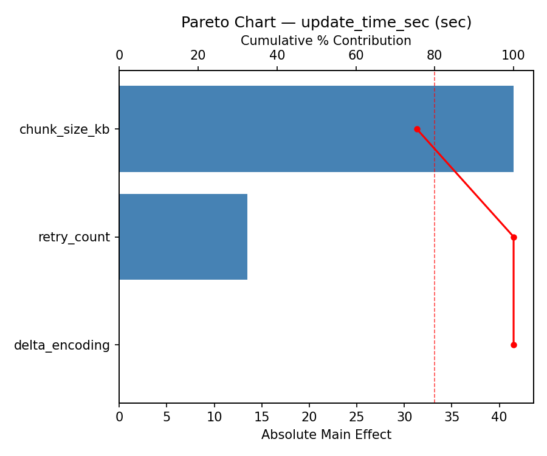
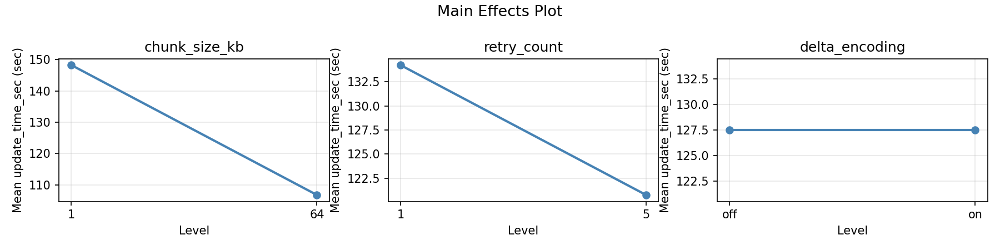
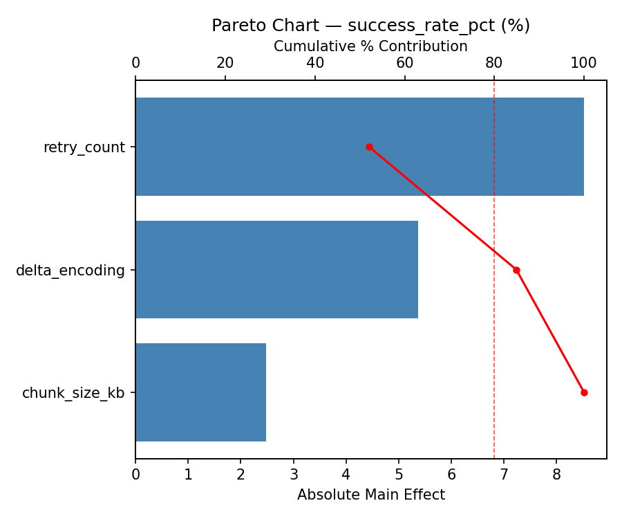

Experimental Setup
Factors
| Factor | Low | High | Unit |
|---|---|---|---|
chunk_size_kb | 1 | 64 | KB |
retry_count | 1 | 5 | retries |
delta_encoding | off | on |
Fixed: transport = coap, compression = lz4
Responses
| Response | Direction | Unit |
|---|---|---|
update_time_sec | ↓ minimize | sec |
success_rate_pct | ↑ maximize | % |
Configuration
use_cases/75_firmware_ota_strategy/config.json
{
"metadata": {
"name": "Firmware OTA Strategy",
"description": "Full factorial of chunk size, retry count, and delta encoding for update time and success rate"
},
"factors": [
{
"name": "chunk_size_kb",
"levels": [
"1",
"64"
],
"type": "continuous",
"unit": "KB"
},
{
"name": "retry_count",
"levels": [
"1",
"5"
],
"type": "continuous",
"unit": "retries"
},
{
"name": "delta_encoding",
"levels": [
"off",
"on"
],
"type": "categorical",
"unit": ""
}
],
"fixed_factors": {
"transport": "coap",
"compression": "lz4"
},
"responses": [
{
"name": "update_time_sec",
"optimize": "minimize",
"unit": "sec"
},
{
"name": "success_rate_pct",
"optimize": "maximize",
"unit": "%"
}
],
"settings": {
"operation": "full_factorial",
"test_script": "use_cases/75_firmware_ota_strategy/sim.sh"
}
}
Experimental Matrix
The Full Factorial Design produces 8 runs. Each row is one experiment with specific factor settings.
| Run | chunk_size_kb | retry_count | delta_encoding |
|---|---|---|---|
| 1 | 1 | 5 | on |
| 2 | 64 | 1 | off |
| 3 | 64 | 5 | off |
| 4 | 64 | 5 | on |
| 5 | 1 | 5 | off |
| 6 | 64 | 1 | on |
| 7 | 1 | 1 | off |
| 8 | 1 | 1 | on |
Step-by-Step Workflow
1
Preview the design
Terminal
$ python doe.py info --config use_cases/75_firmware_ota_strategy/config.json
2
Generate the runner script
Terminal
$ python doe.py generate --config use_cases/75_firmware_ota_strategy/config.json \
--output use_cases/75_firmware_ota_strategy/results/run.sh --seed 42
3
Execute the experiments
Terminal
$ bash use_cases/75_firmware_ota_strategy/results/run.sh
4
Analyze results
Terminal
$ python doe.py analyze --config use_cases/75_firmware_ota_strategy/config.json
5
Get optimization recommendations
Terminal
$ python doe.py optimize --config use_cases/75_firmware_ota_strategy/config.json
6
Generate the HTML report
Terminal
$ python doe.py report --config use_cases/75_firmware_ota_strategy/config.json \
--output use_cases/75_firmware_ota_strategy/results/report.html
Features Exercised
| Feature | Value |
|---|---|
| Design type | full_factorial |
| Factor types | continuous (2), categorical (1) |
| Arg style | double-dash |
| Responses | 2 (update_time_sec ↓, success_rate_pct ↑) |
| Total runs | 8 |
Analysis Results
Generated from actual experiment runs using the DOE Helper Tool.
Response: update_time_sec
Top factors: retry_count (39.8%), chunk_size_kb (31.9%), delta_encoding (28.4%).
Pareto Chart

Main Effects Plot

Response: success_rate_pct
Top factors: delta_encoding (49.4%), chunk_size_kb (39.0%), retry_count (11.6%).
Pareto Chart

Main Effects Plot

Response Surface Plots
3D surfaces fitted with quadratic RSM. Red dots are observed data points.
success rate pct chunk size kb vs retry count

update time sec chunk size kb vs retry count

Full Analysis Output
doe analyze
=== Main Effects: update_time_sec ===
Factor Effect Std Error % Contribution
--------------------------------------------------------------
retry_count -68.0000 21.3358 39.8%
chunk_size_kb -54.5000 21.3358 31.9%
delta_encoding 48.5000 21.3358 28.4%
=== Interaction Effects: update_time_sec ===
Factor A Factor B Interaction % Contribution
------------------------------------------------------------------------
chunk_size_kb retry_count -43.5000 52.4%
retry_count delta_encoding -26.5000 31.9%
chunk_size_kb delta_encoding 13.0000 15.7%
=== Summary Statistics: update_time_sec ===
chunk_size_kb:
Level N Mean Std Min Max
------------------------------------------------------------
1 4 154.7500 27.5726 135.0000 195.0000
64 4 100.2500 75.8743 30.0000 203.0000
retry_count:
Level N Mean Std Min Max
------------------------------------------------------------
1 4 161.5000 45.1184 109.0000 203.0000
5 4 93.5000 58.1292 30.0000 150.0000
delta_encoding:
Level N Mean Std Min Max
------------------------------------------------------------
off 4 103.2500 50.6121 30.0000 139.0000
on 4 151.7500 66.0877 59.0000 203.0000
=== Main Effects: success_rate_pct ===
Factor Effect Std Error % Contribution
--------------------------------------------------------------
delta_encoding 3.0750 2.3415 49.4%
chunk_size_kb -2.4250 2.3415 39.0%
retry_count 0.7250 2.3415 11.6%
=== Interaction Effects: success_rate_pct ===
Factor A Factor B Interaction % Contribution
------------------------------------------------------------------------
chunk_size_kb delta_encoding 10.2750 58.0%
chunk_size_kb retry_count 3.8250 21.6%
retry_count delta_encoding 3.6250 20.5%
=== Summary Statistics: success_rate_pct ===
chunk_size_kb:
Level N Mean Std Min Max
------------------------------------------------------------
1 4 91.7000 5.5958 86.8000 99.7000
64 4 89.2750 8.1920 81.1000 99.0000
retry_count:
Level N Mean Std Min Max
------------------------------------------------------------
1 4 90.1250 7.9977 81.1000 99.7000
5 4 90.8500 6.1668 84.1000 99.0000
delta_encoding:
Level N Mean Std Min Max
------------------------------------------------------------
off 4 88.9500 8.2565 81.1000 99.7000
on 4 92.0250 5.2791 86.8000 99.0000
Optimization Recommendations
doe optimize
=== Optimization: update_time_sec ===
Direction: minimize
Best observed run: #6
chunk_size_kb = 1
retry_count = 5
delta_encoding = off
Value: 30.0
RSM Model (linear, R² = 0.2159, Adj R² = -0.3721):
Coefficients:
intercept +127.5000
chunk_size_kb -14.2500
retry_count -17.0000
delta_encoding +14.0000
Predicted optimum (from linear model):
chunk_size_kb = 1
retry_count = 1
delta_encoding = on
Predicted value: 172.7500
Model quality: Weak fit — consider adding center points or using a different design.
Factor importance:
1. retry_count (effect: -34.0, contribution: 37.6%)
2. chunk_size_kb (effect: -28.5, contribution: 31.5%)
3. delta_encoding (effect: 28.0, contribution: 30.9%)
=== Optimization: success_rate_pct ===
Direction: maximize
Best observed run: #1
chunk_size_kb = 1
retry_count = 1
delta_encoding = off
Value: 99.7
RSM Model (linear, R² = 0.0308, Adj R² = -0.6961):
Coefficients:
intercept +90.4875
chunk_size_kb -0.3875
retry_count +0.8625
delta_encoding -0.5375
Predicted optimum (from linear model):
chunk_size_kb = 1
retry_count = 5
delta_encoding = off
Predicted value: 92.2750
Model quality: Weak fit — consider adding center points or using a different design.
Factor importance:
1. retry_count (effect: 1.7, contribution: 48.3%)
2. delta_encoding (effect: -1.1, contribution: 30.1%)
3. chunk_size_kb (effect: -0.8, contribution: 21.7%)